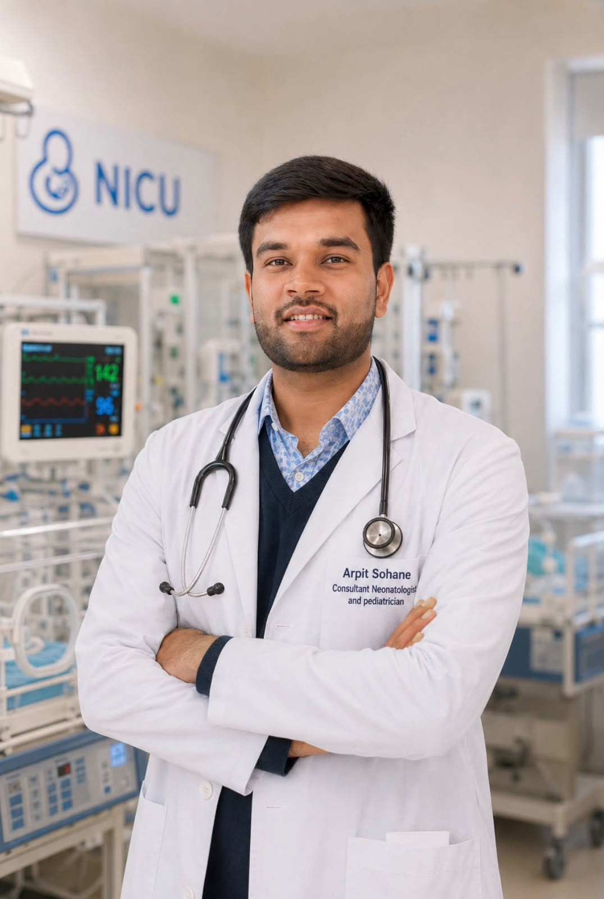

Dr. Arpit Sohane is a highly skilled, DM-trained Neonatologist specializing in Level III NICU care, advanced neonatal ventilation, point-of-care ultrasound (POCUS), and neonatal hemodynamics. Committed to providing advanced and evidence-based neonatal and pediatric care. डॉ. अर्पित सोहाने एक अत्यंत कुशल, डी.एम. प्रशिक्षित नवजात शिशु रोग विशेषज्ञ हैं। वे लेवल III एन.आई.सी.यू. (NICU) देखभाल, उन्नत नवजात वेंटिलेशन, पॉइंट-ऑफ-केयर अल्ट्रासाउंड (POCUS), और नवजात हेमोडायनामिक्स में विशेषज्ञता रखते हैं।
NICU Beds Managed
NICU बेड्स प्रबंधन
Publications & Research
शोध पत्र व प्रकाशन

Dr. Arpit Sohane is a dedicated neonatologist with extensive experience in Level III NICU. Trained at premier medical institutions in India, his clinical philosophy centers on compassionate, family-oriented neurodevelopmental care for premature and extremely low birth weight infants.
डॉ. अर्पित सोहाने एक समर्पित नवजात रोग विशेषज्ञ हैं, जिन्हें लेवल III एन.आई.सी.यू. (NICU) का व्यापक अनुभव है। भारत के प्रमुख चिकित्सा संस्थानों से शिक्षित, उनकी चिकित्सा पद्धति समय से पूर्व जन्मे और अत्यंत कम वजन वाले नवजातों की संवेदनशील एवं परिवार-उन्मुख देखभाल पर केंद्रित है।
He is actively involved in clinical research and Quality Improvement (QI) initiatives. His academic interests include Point-of-Care Ultrasound (POCUS), neonatal hemodynamic monitoring, and nutritional optimization.
वे नैदानिक अनुसंधान और गुणवत्ता सुधार (QI) पहलों में सक्रिय रूप से शामिल हैं। उनकी शैक्षणिक रुचियों में पॉइंट-ऑफ-केयर अल्ट्रासाउंड (POCUS), नवजात हेमोडायनामिक्स और पोषण शामिल हैं।
L/2023/S-5597
MP-23104
MMC/2024/02/0532
Bharati Vidyapeeth Medical College, Pune, Maharashtra
Netaji Subhash Chandra Bose Medical College, Jabalpur, MP (MPMSU)
Netaji Subhash Chandra Bose Medical College, Jabalpur, MP (RDVV)
Bharati Vidyapeeth Medical College, Pune
Netaji Subhash Chandra Bose Medical College, Jabalpur
Providing state-of-the-art diagnostic, critical care, and follow-up support for newborns. नवजात शिशुओं और बच्चों के लिए अत्याधुनिक नैदानिक, गहन चिकित्सा और स्वास्थ्य फॉलो-अप।
Comprehensive health tracking, immunization schedules, and developmental milestone checkups for healthy infants.
स्वस्थ शिशुओं के लिए व्यापक स्वास्थ्य मूल्यांकन, टीकाकरण कार्यक्रम और विकास के चरणों की नियमित निगरानी।
Expert care for extremely preterm, critically ill, and extremely low birth weight infants with state-of-the-art facilities.
अत्यंत समय से पहले जन्मे (प्रीमेच्योर), गंभीर रूप से बीमार और बहुत कम वजन वाले नवजात शिशुओं की विशेषज्ञ देखभाल।
Real-time bedside screening of the lung, brain, abdomen, and line placements for prompt and precise treatment decisions.
त्वरित और सटीक उपचार निर्णयों के लिए बेडसाइड फेफड़े, मस्तिष्क, पेट और कैथेटर लाइनों की रीयल-टाइम सोनोग्राफी।
Real-time cardiac assessment to manage neonatal hemodynamics, blood pressure, and cardiovascular function in critical babies.
गंभीर नवजातों के हृदय की रक्त संचार प्रणाली, रक्तचाप और हृदय की कार्यप्रणाली का बेडसाइड मूल्यांकन।
Support for complex respiratory issues utilizing non-invasive ventilation, invasive mechanical ventilation, and High-Frequency ventilation.
गैर-आक्रामक, आक्रामक मैकेनिकल और हाई-फ़्रीक्वेंसी वेंटिलेशन द्वारा श्वसन समस्याओं का उत्कृष्ट उपचार।
Advanced management for birth asphyxia using therapeutic hypothermia (cooling therapy), along with aEEG and NIRS monitoring.
जन्म के समय सांस न ले पाने वाले शिशुओं के लिए कूलिंग थेरेपी (Therapeutic Hypothermia), aEEG और NIRS निगरानी।
Structured developmental assessments (HNNE, HINE, ASQ) to ensure timely intervention and growth optimization for high-risk babies.
जोखिम वाले बच्चों के स्वास्थ्य व तंत्रिका तंत्र के विकास का मूल्यांकन (HNNE, HINE, ASQ) ताकि समय पर उपचार हो सके।
Monitoring neonatal bilirubin levels, provision of intensive phototherapy, and performing double volume exchange transfusion when required.
नवजात शिशुओं में पीलिया की निगरानी, गहन फोटोथेरेपी और गंभीर स्थिति में एक्सचेंज ट्रांसफ्यूजन की सुविधा।
Neonatal Point-of-Care Ultrasound & Hemodynamics Training (2024)
नवजात पॉइंट-ऑफ-केयर अल्ट्रासाउंड और हेमोडायनामिक्स प्रशिक्षण (2024)
Certified Advanced Neonatal Resuscitation Program Provider
प्रमाणित एडवांस्ड नियोनेटल रिससिटेशन प्रोग्राम प्रदाता (NRP)
Pediatric Nutrition Program, Boston University School of Medicine (2022)
बाल पोषण कार्यक्रम, बोस्टन यूनिवर्सिटी स्कूल ऑफ मेडिसिन (2022)
Advanced Ventilation Workshop, St Johns Medical College, Bengaluru (2024)
एडवांस्ड वेंटिलेशन वर्कशॉप, सेंट जॉन्स मेडिकल कॉलेज, बेंगलुरु (2024)
Research papers indexed in PubMed and International Journals. ORCID ID: 0000-0002-9743-6796 PubMed और अंतर्राष्ट्रीय जर्नल्स में प्रकाशित शोध पत्र। ORCID ID: 0000-0002-9743-6796
Frontiers in Pediatrics, 2025 Aug 29;13:1632908.
Frontiers in Pediatrics, 2025 Jul 23;13:1623047.
Frontiers in Pediatrics, 2025 Oct 30;13:1648694.
Frontiers in Pediatrics, 2025; 13:1622357.
International Journal of Recent Surgical and Medical Sciences, 2023;9(01):018-22.
Journal of Neonatology, 2026;40(2):200-203.
Investigating predictive factors and accuracy parameters of lung ultrasonography to reduce extubation failures in premature ventilated neonates.
Prof. Dr. Pradeep Suryawanshi is an internationally recognized neonatologist. He has mentored Dr. Arpit Sohane during his DM Neonatology residency at Bharati Vidyapeeth Medical College, Pune. प्रो. डॉ. प्रदीप सूर्यवंशी एक अंतर्राष्ट्रीय स्तर पर प्रशंसित नवजात रोग विशेषज्ञ हैं। उन्होंने भारती विद्यापीठ मेडिकल कॉलेज, पुणे में डॉ. अर्पित के डी.एम. प्रशिक्षण के दौरान उनका मार्गदर्शन किया।
Prof. Dr. Monica Lazarus mentored Dr. Arpit during his MD Pediatrics residency and research at Netaji Subhash Chandra Bose Medical College, Jabalpur. प्रो. डॉ. मोनिका लाजरस ने नेताजी सुभाष चंद्र बोस मेडिकल कॉलेज, जबलपुर में डॉ. अर्पित के एम.डी. बाल रोग रेजिडेंसी और शोध कार्यों के दौरान उनका मार्गदर्शन किया।
| Monday - Saturdayसोमवार से शनिवार | 07:00 PM - 09:00 PM सायं 7:00 बजे से 9:00 बजे तक |
| Sundayरविवार | Closed / Emergency Onlyबंद / केवल आपातकालीन |
For high-risk infants and premature babies, appointments are highly recommended to prevent long waiting times.
गंभीर एवं समय पूर्व जन्मे शिशुओं के लिए पहले से अपॉइंटमेंट लेने की सलाह दी जाती है ताकि प्रतीक्षा समय कम हो सके।
Save Dr. Arpit's Contact details directly to your phonebook डॉ. अर्पित का संपर्क विवरण सीधे अपनी फोनबुक में सहेजें
Submit details below. The clinic coordinator will call you to confirm your slot. कृपया विवरण भरें। क्लिनिक समन्वयक स्लॉट की पुष्टि के लिए आपसे संपर्क करेंगे।